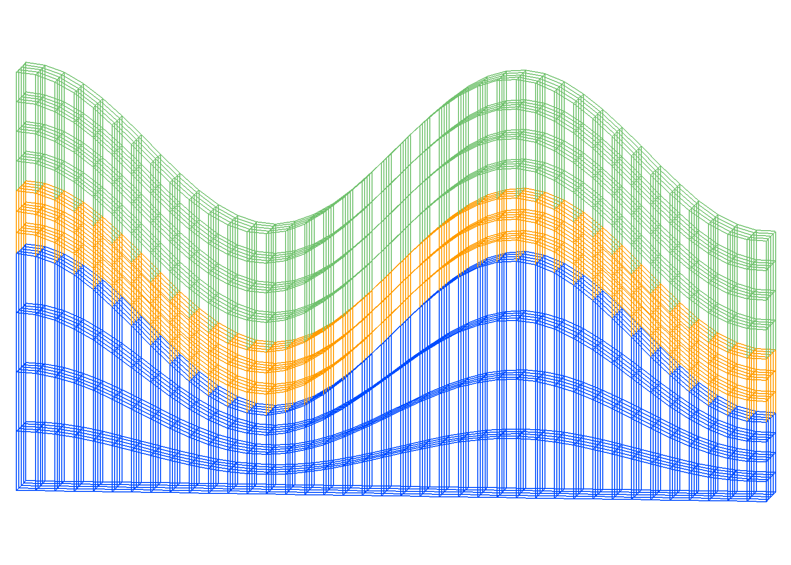
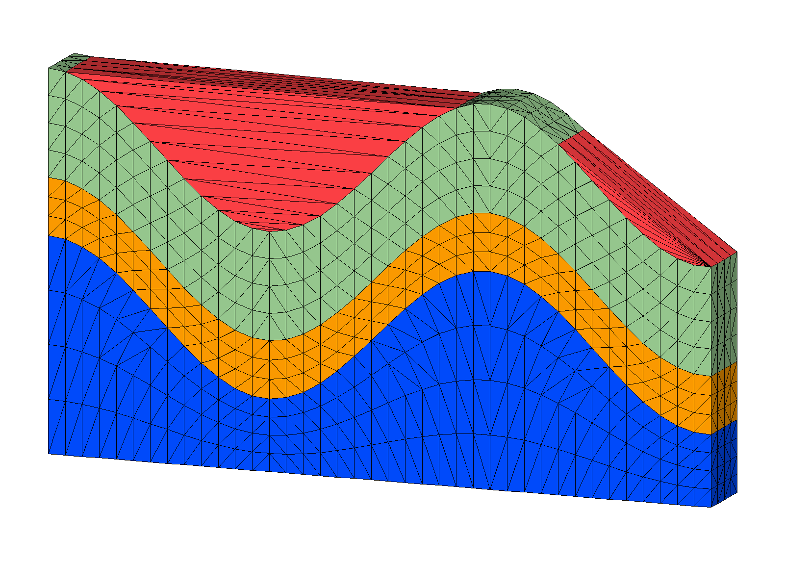
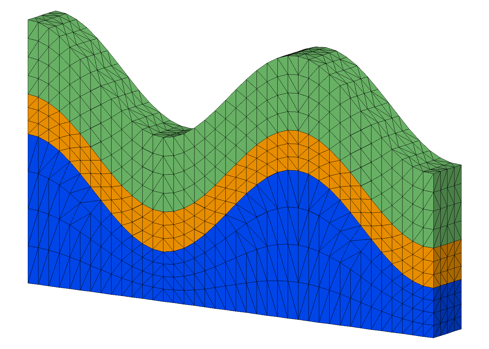

Example: 3D connect/noadd for non-convex boundary
connect / noadd with input points from a hex mesh created with stack/layers. This example has a non-convex boundary and bad elements are created connecting across the outside boundary. This fix uses interpolate/map from the hex mesh to the tet mesh to tag and remove bad tets connecting outside the boundary.
 Step 2. Stack surfaces into hex mesh
Step 3. Connect points into tetrahedral mesh
 Step 4. Interpolate hex colors to tet mesh
 Step 5. Remove Outside Tets from the mesh
LaGriT input command file with all steps: wave_connect_interpolate.in.txt
LaGriT output report for all steps: wave_connect_interpolate.out.txt
Step 1 Create Surfaces
Commands to create quad surface
* Define variables for spacing
* spacing near .25
define / XMAX / 9.5
define / YMAX / 1.
define / NX / 40
define / NY / 5
*-------------------------------------------------
* Create the quad mesh with wave as top surface
* Use x coordinates to compute z based on cos()
* z(i)=cos(x(i))
cmo / create / mosurf / / / quad
quadxy/NX NY/0. 0. 0./ XMAX 0. 0./ &
XMAX YMAX 0./0. YMAX 0./ 1 1 1
createpts/brick/xyz/NX,NY,1/1 0 0 / connect
cmo / setatt / mosurf / imt / 1 0 0 / 1
cmo / setatt / mosurf / itetclr / 1 0 0 / 1
resetpts / itp
cmo / printatt / mosurf / -xyz- / minmax
math/cos/mosurf/zic/1,0,0/mosurf/xic
cmo / printatt / mosurf / -xyz- / minmax
dump / surf_wave.inp / mosurf
dump / surf_wave.gmv / mosurf
QUADXY GENERATED POINTS 1 TO 200
createpts/brick/xyz/NX,NY,1/1 0 0/connect
Number of nodes: 200
Number of elements: 156
Number of negative volume elements: 0
Total volume: 0.950000000000E+01
math/cos/mosurf/zic/1,0,0/mosurf/xic
cmo/printatt/mosurf/-xyz-/minmax
ATTRIBUTE NAME MIN MAX DIFFERENCE LENGTH
xic 0.000000000E+00 9.500000000E+00 9.500000000E+00 200
yic 0.000000000E+00 1.000000000E+00 1.000000000E+00 200
zic -9.996856634E-01 1.000000000E+00 1.999685663E+00 200
Commands to make surfaces for stacking
* make layers for for input into stack * translate surfaces for vertical spacing define ZBOT 0. define S1 2. define S2 .8 define S3 1.5 cmo select mosurf trans /1,0,0/ 0. 0. 0./ 0. 0. S1 dump / surf_wave_low.inp / mosurf trans /1,0,0/ 0. 0. 0./ 0. 0. S2 dump / surf_wave_high.inp / mosurf trans /1,0,0/ 0. 0. 0./ 0. 0. S3 dump / surf_wave_top.inp / mosurf cmo/setatt/mosurf/ zic/ ZBOT dump / surf_flat_bot.inp / mosurf
Output quad surfaces
Created quad surface with z(i)=cos(x(i))
This surface is used as template to create additional surfaces.

Step 2 Stack Hex Mesh
Commands to stack layers into a hex mesh
*------------------------------------------------- * MAKE HEX for POINT DISTRIBUTION and INTERPOLATE * Stack from bottom to top and add refine layers cmo/create/mo_stack stack/layers/avs/ & surf_flat_bot.inp 1 & surf_wave_low.inp 2 3 & surf_wave_high.inp 3 2 & surf_wave_top.inp 3 3 * fill stacked quad surfaces with hex elements stack/fill/mohex / mo_stack cmo select mohex resetpts itp * write information about this mesh object cmo/printatt/mohex/-xyz- minmax quality * check hex volumes cmo/addatt/mohex/volume hex_vol cmo/printatt/mohex/hex_vol minmax eltset/ ebad / hex_vol/le 0. dump hex_stack.inp mohex dump hex_stack.gmv mohex
Output stacked hex mesh
The stack/layers command is used to stack layers and create refined layers.
For this example there are top and bottom layers plus 2 internal layers to seperate materials.
The vertical spacing between these input layers are refined proportionally by adding refine layers.
- Bottom (yellow), internal interfaces (green), top (red)
- Blue surfaces are the added proportional layers.

surface name layer color type llcorner zic
surf_flat_bot.inp 1 1 -1 1) 0.000000E+00
refine 2 1 2 201) 7.500000E-01
refine 3 1 2 401) 1.500000E+00
refine 4 1 2 601) 2.250000E+00
surf_wave_low.inp 5 2 0 801) 3.000000E+00
refine 6 2 2 1001) 3.266667E+00
refine 7 2 2 1201) 3.533333E+00
surf_wave_high.inp 8 3 0 1401) 3.800000E+00
refine 9 3 2 1601) 4.175000E+00
refine 10 3 2 1801) 4.550000E+00
refine 11 3 2 2001) 4.925000E+00
surf_wave_top.inp 12 3 -2 2201) 5.300000E+00
Elements per layer: 156 stacked total: 1872
Nodes per layer: 200 stacked total: 2400
No Truncating layer specified.
files read: 4 from total: 4
The stacked layers are connected into hex elements. The quality and cmo/addatt/cmo/volume commands are used to check that volumes are positive.
{kind=link}
ATTRIBUTE NAME MIN MAX DIFFERENCE LENGTH hex_vol 1.535352422E-02 4.552152812E-02 3.016800390E-02 1716 eltset/ebad/hex_vol/le 0. THE ELTSET ebad HAS 0 ELEMENTS
Step 3 Connect
Copy the hex points into a new mesh object and connect into tetrahedrals.
Commands to connect
# CONNECT POINTS INTO TET MESH # copy points from hex mesh into new mesh object # connect points with no geometry and single material # no new points will be added cmo/create/motet copypts/motet/mohex # remove duplicate points # set some defaults for the connect routine filter/1,0,0 ; rmpoint/compress # Initialize to single material and no boundaries cmo / setatt / motet / imt / 1 0 0 / 1 cmo / setatt / motet / itp / 1 0 0 / 0 # connect input points and do not add points # material interface detection is turned off connect / noadd quality
Output Connected Tet Mesh
The boundary of this point distribution is non-convex and connections are made across the outside boundary. This is easy to see visually, the quality command also indicates elements with high aspect ratios.
{kind=link}
connect/noadd
Coordinates of enclosing tetrahedron are:
-0.19000D+02 -0.75000D+00 -0.39750D+01
0.47500D+01 -0.75000D+00 0.22525D+02
0.28500D+02 -0.75000D+00 -0.39750D+01
0.47500D+01 0.42500D+01 0.26500D+01
The mesh is now complete!
quality
epsilonl, epsilonaspect: 2.4256785E-12 1.4272489E-35
--------------------------------------------
elements with aspect ratio < .01: 14
elements with aspect ratio b/w .01 and .02: 22
elements with aspect ratio b/w .02 and .05: 85
elements with aspect ratio b/w .05 and .1 : 115
elements with aspect ratio b/w .1 and .2 : 124
elements with aspect ratio b/w .2 and .5 : 95
elements with aspect ratio b/w .5 and 1. : 10201
min aspect ratio = 0.3892E-02 max aspect ratio = 0.8161E+00
epsilonvol: 1.1179946E-11
---------------------------------------
element volumes b/w 0.5908E-03 and 0.1359E-02: 24
element volumes b/w 0.1359E-02 and 0.3125E-02: 3660
element volumes b/w 0.3125E-02 and 0.7186E-02: 5952
element volumes b/w 0.7186E-02 and 0.1653E-01: 840
element volumes b/w 0.1653E-01 and 0.3800E-01: 180
min volume = 5.9078890E-04 max volume = 3.8004389E-02
-----------------------------------------------------------
10656 total elements evaluated.
Step 4 Interpolate
Commands to interpolate hex materials to tet materials
The hex mesh with 3 materials can be interpolated on to the tet mesh to find elements outside the mesh. The outside elements are tagged within the command so they can be identified and removed.
* INTERPOLATE HEX to TET * interpolate hex materials on to tet mesh elements * this will tag tets outside boundary with value 5 * valid imt and itetclr values are int values gt 0 interpolate/map/motet itetclr/1,0,0/mohex itetclr/ 5 dump/tet_connect_color.inp/motet dump/tet_connect_color.gmv/motet cmo/printatt/mohex/ itetclr minmax cmo/printatt/motet/ itetclr minmax
Output Colored Tet Mesh
The tet mesh now has the 3 materials interpolated from the hex mesh. The elements outside the source hex mesh have been tagged (red).
{kind=link}
interpolate/map/motet itetclr/1,0,0/mohex itetclr/5
elements in indexed set = 10656
INTRP METHOD: map FUNCTION: user
TIEBREAKER: maxtie FLAG: user 0.500000000000E+01
Total Source Elements: 1716
Total Sink Centroids: 10656
WARNING: Sink points not inside source grid: 360
Outside sink points flagged with value: 5.00
interpolate/map done.
Step 5 Remove Outside Tets
The tagged elements are removed and the final mesh files written. The mesh statistics are reported and checked for possible issues before being used by a modeling application.
Commands to remove tets
* remove bad tets crossing non-convex boundary * set interface and boundary nodes with itp values cmo/select/motet rmmat/ 5 rmpoint/compress resetpts/itp * get mesh quality statistics cmo/addatt/motet/volume/tet_vol cmo/addatt/motet/voronoi_volume/vor_vol cmo/printatt/motet/tet_vol/minmax cmo/printatt/motet/vor_vol/minmax quality * write AVS and GMV mesh file formats dump/tet_connect.inp/motet dump/tet_connect.gmv/motet * write minmax of all mesh attributes cmo/printatt/motet/ -all- minmax * Exit finish
Output Final Colored Tet Mesh
{kind=link}
rmmat/5
RMMAT DUDDED 0 POINTS: FLAGGED 360 ELEMENTS
rmpoint/compress
0 points removed and 360 elements removed.
RMPOINT: new point count is 2400
RMPOINT: new element count is 10296
ATTRIBUTE NAME MIN MAX DIFFERENCE LENGTH
tet_vol 2.538190758E-03 8.066814185E-03 5.528623427E-03 10296
vor_vol 1.908426385E-03 4.559428664E-02 4.368586025E-02 2400
quality
epsilonl, epsilonaspect: 2.4256785E-12 1.4272489E-35
--------------------------------------------
elements with aspect ratio < .01: 0
elements with aspect ratio b/w .01 and .02: 0
elements with aspect ratio b/w .02 and .05: 0
elements with aspect ratio b/w .05 and .1 : 0
elements with aspect ratio b/w .1 and .2 : 0
elements with aspect ratio b/w .2 and .5 : 95
elements with aspect ratio b/w .5 and 1. : 10201
min aspect ratio = 0.3637E+00 max aspect ratio = 0.8161E+00
epsilonvol: 1.1179946E-11
---------------------------------------
element volumes b/w 0.2538E-02 and 0.3199E-02: 3720
element volumes b/w 0.3199E-02 and 0.4031E-02: 4224
element volumes b/w 0.4031E-02 and 0.5080E-02: 516
element volumes b/w 0.5080E-02 and 0.6401E-02: 636
element volumes b/w 0.6401E-02 and 0.8067E-02: 1200
min volume = 2.5381908E-03 max volume = 8.0668142E-03
-----------------------------------------------------------
10296 total elements evaluated.
END Example